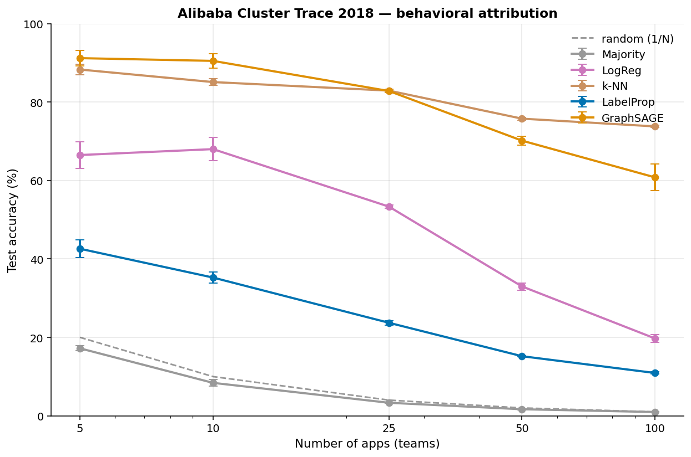
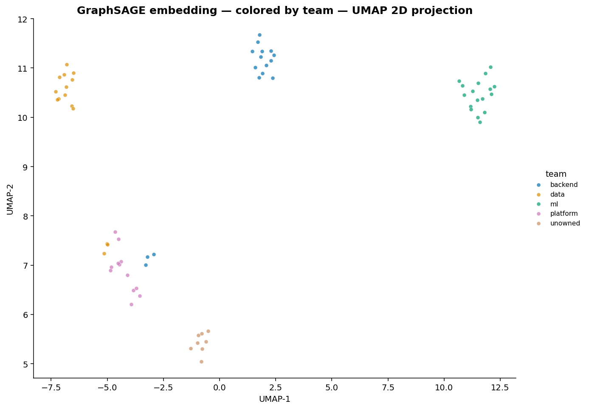
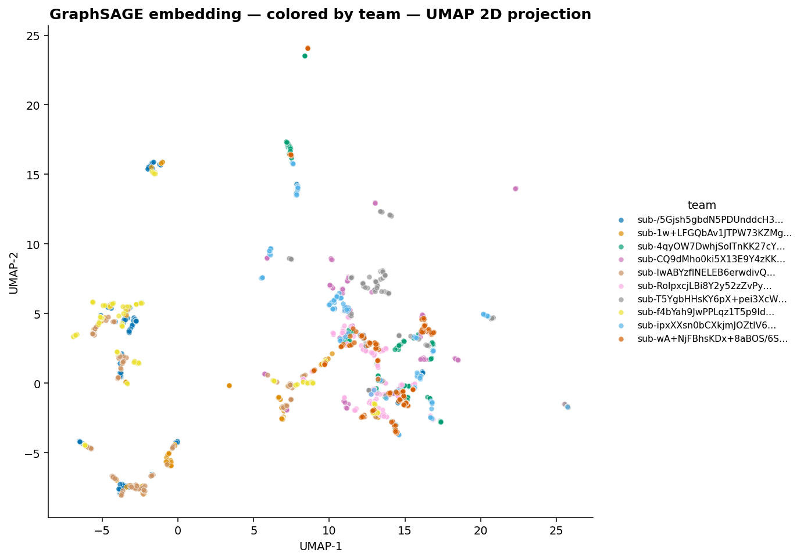

Tag-based cost attribution fails on 40–60% of real AWS resources. CostDNA infers ownership from behavioral fingerprints (IAM access patterns, VPC flows, deploy timing, cost time-series shape) using a Graph Neural Network — and writes the inferred tags back to AWS.
Every FinOps team's most painful metric: the percentage of AWS spend that can't be attributed to any team. Industry estimates put it at 40–60%.
Tagging is the standard answer, but tags get out of sync. Resources are created in a hurry. Engineers leave. Tags drift. Existing FinOps dashboards (CloudHealth, Vantage, Apptio) are only as good as the tags you have — and on most accounts, the tags you have aren't enough.
CostDNA is the missing input layer: a tool that infers the missing tags from behavior, then writes them back so existing tooling actually works.
Every team leaves a fingerprint. Same IAM role touches the resource. Same CI/CD pipeline deploys to it. Same engineers' API calls hit it at predictable times. A GNN learns this fingerprint and uses it to attribute previously-untagged resources.
Collect signals (CloudTrail, VPC Flow Logs, Cost Explorer) → extract 9 behavioral features per resource → build a graph (network + IAM + VPC edges) → train a 4-layer GraphSAGE classifier → output predictions with confidence + dollars-attributed + anomaly flags.
$ costdna scan --aws-profile prod → Collecting from AWS (142 resources, 18,304 events, 612 flow edges) → Training GraphSAGE → Looking for cost spikes ╭─── CostDNA — Executive summary ────────────────────────────╮ │ You have $9,570 in untagged spend across 142 resources. │ │ │ │ ✓ Ready to tag: 138 resources, $9,186 (96%) at ≥0.7 conf │ │ ⚠ Need review: 4 resources, $384 (4%) below 0.7 │ │ │ │ Recommended actions: │ │ • Tag 17 resources as ml → moves $4,412.54 out │ │ • Tag 14 resources as data → moves $2,142.65 out │ │ • Tag 16 resources as backend → moves $1,829.61 out │ │ • Review 4 low-confidence resources before tagging. │ ╰────────────────────────────────────────────────────────────╯
I had a 97% accuracy result on Microsoft's published 2.6M-VM Azure dataset. I audited it. It was a tautology.
Across all 33,205 deployments in the Azure trace, 100% mapped 1:1 to a single subscription. So deployment_id, used as a graph edge, was a perfect lookup of subscription_id. LabelProp's "97%" was a graph database join, not learning.
Most engineers stop when they see a high accuracy number and ship it. I caught the leak by asking "are you sure data is accurate?" The same audit on Microsoft's Philly DL trace surfaced another partial leak: 85% of users belong to exactly one virtual cluster, so user-IAM edges encoded most of the team-membership signal.
Three datasets, three different shortcuts, one consistent finding:
| Dataset | Resources | Teams | First-cut acc | Audited shortcut | Honest behavioral acc |
|---|---|---|---|---|---|
| Microsoft Azure | 2.6M VMs | 100 | 97% | deployment_id ≡ sub (100% deterministic) |
6.9% (12× rand) |
| Microsoft Philly | 117K jobs | 15 | 89% | user_id → vc (85% deterministic) |
14% (2× rand) |
| Alibaba 2018 | 71K containers | 100 | 61% | none — 99.7% of machines run 2+ apps | 61% (61× rand) |
The finding: production cost attribution is mostly a metadata-lookup problem; behavioral fingerprinting matters specifically when metadata is missing or unreliable. CostDNA's synthetic environment deliberately reproduces those gaps (cross-team services, reassignments, vendor unknowns) — that's where the GNN earns its keep.
71,500 production containers from 9,790 apps in a real Alibaba cluster. 5-fold cross-validated. No graph leak.

| N apps | GraphSAGE | k-NN | LogReg | Random | Lift over random |
|---|---|---|---|---|---|
| 5 | 91.2% | 88.3% | 66.5% | 20% | 4.6× |
| 10 | 90.5% | 85.1% | 68.0% | 10% | 9.1× |
| 25 | 82.8% | 82.9% | 53.3% | 4% | 21× |
| 50 | 70.2% | 75.8% | 33.0% | 2% | 38× |
| 100 | 60.8% | 73.8% | 19.7% | 1% | 74× |
GraphSAGE learns 2D-projected representations where same-team resources cluster together and unowned ones sit visibly separate.
Synthetic AWS env (4 teams + 4 unowned categories). Note the tan "unowned" cluster — vendor / legacy / orphan / shadow resources — sitting visibly apart from the team clusters. The anomaly detector picks them up automatically without being told they're unowned.

Real Azure data (10 subscriptions). Looser clustering — features are weaker (only summary CPU stats available), graph structure provides almost all the signal. Same-color points still group, but with more overlap.

14 production CLI subcommands. 5 baselines benchmarked at every step. K-fold cross-validation everywhere.
No AWS account needed for the synthetic demo. Real-cloud paths require ~30 min of setup.
$ git clone https://github.com/pauti04/costdna && cd costdna $ pip install -e . $ costdna scan --synthetic --show-kind
$ curl -L -o data/vmtable.csv.gz \ https://azurepublicdatasettraces.blob.core.windows.net/azurepublicdatasetv2/trace_data/vmtable/vmtable.csv.gz $ costdna benchmark --azure-trace data/vmtable.csv.gz --kfold 5 # See the audit story unfold in real time.
$ cd terraform && terraform apply $ costdna doctor --aws-profile prod $ costdna scan --aws-profile prod --save-dir runs/$(date +%F) $ costdna apply --predictions runs/$(date +%F)/predictions.csv --apply
Full runbook: DEPLOYMENT.md
lookup_events API